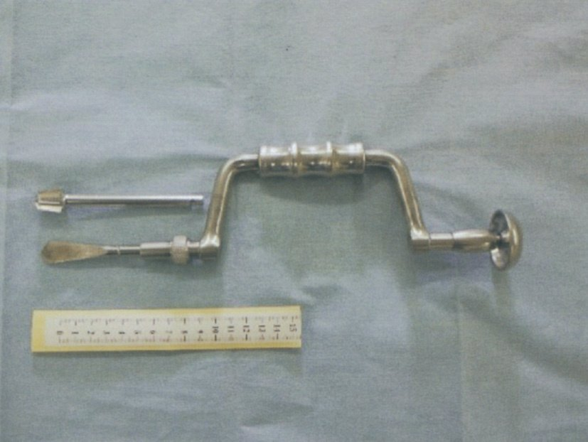
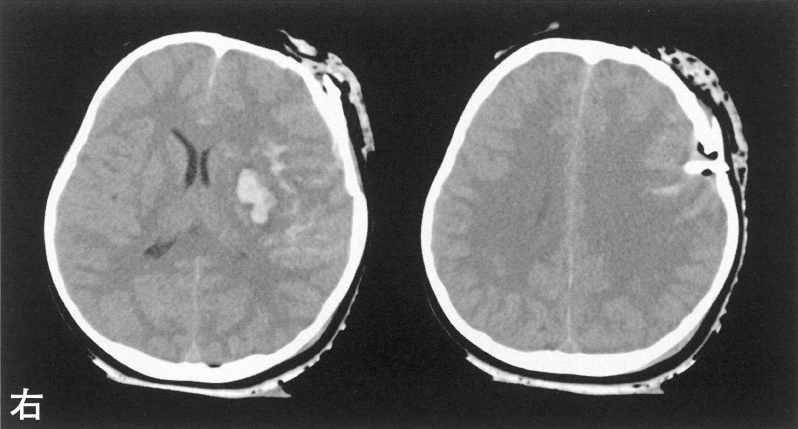
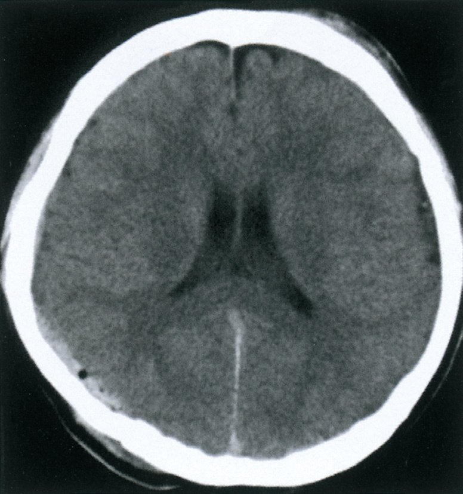
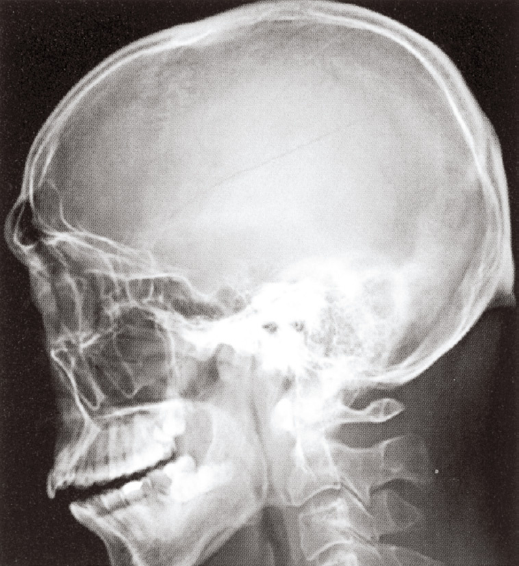
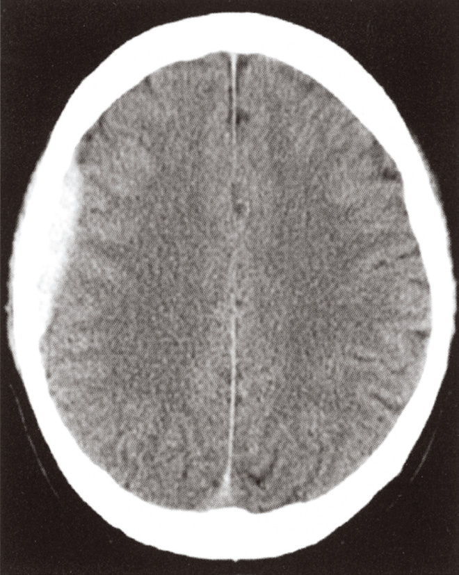
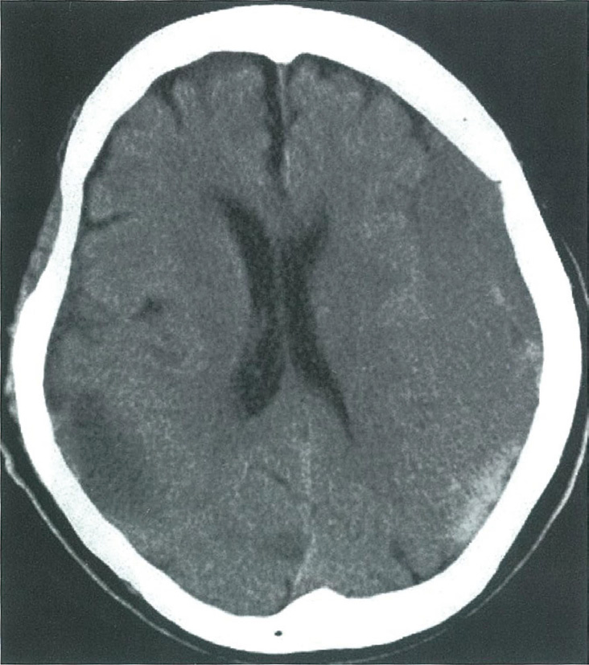

★
A/B 問題（★問題）
Q.531〜Q.539
Q.531(119F-55)★📷 画像正答率 87%
35歳男性。後頭部打撲（1時間前）。意識清明。CT①〜⑤。診断として最も適切なCT所見はどれか。
ａ ①
ｂ ②
ｃ ③
ｄ ④
ｅ ⑤
✅
ｄ ④
外傷後1時間・意識清明→急性硬膜外血腫（意識清明期）のCT（凸レンズ状高吸収域）
理解度：
📝 メモ
🧠 急性硬膜外血腫
急性硬膜外血腫（EDH）：・中硬膜動脈の損傷（側頭骨骨折を伴うことが多い）
・意識清明期（Lucid interval）：受傷直後に意識消失→一時回復→再び悪化
・CT：凸レンズ（レンズ型）状の高吸収域（硬膜内側）
・治療：緊急開頭血腫除去術
🎯 国試ポイント
EDH＝凸レンズ状CT＋意識清明期＋中硬膜動脈損傷。硬膜下血腫（SDH）は三日月状。Q.532(118D-57)★正答率 93%
67歳男性。1週間の頭痛＋昨晩から下肢脱力→今朝に意識障害。治療はどれか。
ａ 経過観察
ｂ 減圧開頭術
ｃ ステント留置術
ｄ 脳室ドレナージ術
ｅ 穿頭血腫ドレナージ術
✅
e 穿頭血腫ドレナージ術
慢性硬膜下血腫（亜急性〜慢性）→穿頭ドレナージ術
理解度：
📝 メモ
🧠 慢性硬膜下血腫（CSDH）
慢性硬膜下血腫（CSDH）：外傷（軽微でも）後1〜2か月で徐々に出現。高齢者・抗凝固薬服用者に多い。症状：頭痛・認知機能低下・片麻痺・意識障害（緩徐進行）。
CT：三日月状の等〜低吸収域（等吸収→慢性期は低吸収→見逃し注意）。
治療：穿頭ドレナージ術（局所麻酔で可能・予後良好）。
Q.533(116D-71)★2択正答率 95%
連問（116D-71）。飲み会帰りに転落。JCS II-10。診断として考えられるのはどれか。2つ選べ。
ａ 頭蓋骨骨折
ｂ 急性硬膜外血腫
ｃ 急性硬膜下血腫
ｄ 外傷性脳内血腫
ｅ びまん性軸索損傷
✅
ａ 頭蓋骨骨折
ｂ 急性硬膜外血腫
ｂ 急性硬膜外血腫
意識障害＋外傷（側頭部）→急性硬膜外血腫（＋頭蓋骨骨折が多い）
理解度：
📝 メモ
🧠 ICHB_TABLE参照
| 病態 | 出血部位 | CT所見 | 特徴 | 治療 |
| 急性硬膜外血腫 | 動脈（中硬膜動脈） | 凸レンズ状高吸収 | 意識清明期あり・側頭部打撲後 | 緊急開頭 |
| 急性硬膜下血腫 | 架橋静脈 | 三日月状高吸収 | 意識清明期なし・重症多い | 開頭（重症） |
| 慢性硬膜下血腫 | 架橋静脈（遅延） | 三日月状等〜低吸収 | 外傷後1〜2か月・高齢者 | 穿頭ドレナージ |
| 脳挫傷 | 脳実質 | 点状出血 | 局所神経症状 | 保存的（重症は開頭） |
Q.534(114D-12)★📷 画像2択正答率 78%
脳神経外科手術器具（A・B）。使用する術式はどれか。2つ選べ。


ａ 脳動脈瘤に対するコイル塞栓術
ｂ 慢性硬膜下血腫に対する穿頭ドレナージ術
ｃ 下垂体腺腫に対する経蝶形骨洞的腫瘍摘出術
ｄ 頸部内頸動脈狭窄に対する頸動脈内膜剝離術
ｅ 正常圧水頭症に対する脳室腹腔短絡術〈VP シャント〉
✅
ｂ 慢性硬膜下血腫に対する穿頭ドレナージ術
ｅ 正常圧水頭症に対する脳室腹腔短絡術〈VP シャント〉
ｅ 正常圧水頭症に対する脳室腹腔短絡術〈VP シャント〉
穿頭ドリル＋シャントチューブ→穿頭ドレナージ（CSDH）とV-Pシャント（NPH）に使用
理解度：
📝 メモ
🧠 穿頭ドリルとシャント器具
穿頭ドリル：頭蓋骨に穴を開ける器具。穿頭ドレナージ（CSDH）・V-Pシャント（NPH）で使用。コイル塞栓術・頸動脈ステント・下垂体手術は異なる器具。Q.535(112D-66)★📷 画像2択正答率 11%
8歳男児。交通外傷→JCS III-100。開頭圧迫骨折あり。行うべき治療はどれか。2つ選べ。

ａ 減圧開頭術
ｂ 抗菌薬投与
ｃ 脳室ドレナージ
ｄ 脳内血腫除去術
ｅ 副腎皮質ステロイド投与
✅
ａ 減圧開頭術
ｂ 抗菌薬投与
ｂ 抗菌薬投与
開頭骨折＋高度意識障害→緊急減圧開頭＋感染予防（開放性骨折）で抗菌薬
理解度：
📝 メモ
🧠 開頭骨折の治療
開頭（開放）骨折：皮膚・硬膜損傷で脳が外界に露出→感染リスク→抗菌薬予防投与。意識障害＋脳圧亢進→減圧開頭術。ステロイドは頭部外傷では禁忌（CRASH試験で死亡率増加）。Q.536(110C-22)★📷 画像正答率 97%
男児。頭部外傷（側頭部打撲）来院。意識清明。行うべき検査はどれか。


ａ 脳 波
ｂ 頭部CT
ｃ 頭部MRI
ｄ 腰椎穿刺
ｅ 脳血管撮影
✅
b 頭部CT
頭部外傷後の評価→まず頭部CT（出血・骨折の確認）
理解度：
📝 メモ
🧠 頭部外傷初期評価
頭部外傷後：まず頭部CTで出血・骨折・脳挫傷を確認。MRIより迅速。腰椎穿刺は頭蓋内圧亢進時は禁忌（CT先行）。脳波は急性外傷評価には使わない。Q.537(105C-28)★正答率 99%
連問（105C-28〜29）。頭部CTでの空気（低吸収域）。考えられる病態はどれか。
ａ 気脳症
ｂ 脳梗塞
ｃ 水頭症
ｄ 脳内出血
ｅ テント切痕ヘルニア
✅
a 気脳症
CT上の頭蓋内空気（黒い低吸収域）→気脳症（pneumocephalus）→頭蓋底骨折・前頭蓋底損傷
理解度：
📝 メモ
🧠 気脳症
気脳症（Pneumocephalus）：頭蓋内への空気混入。原因：前頭蓋底骨折・副鼻腔・硬膜損傷→空気が頭蓋内に入る。CT：頭蓋内の極端な低吸収域（水より低い）。髄液漏（後鼻漏）を伴うことがある。Q.538(105C-29)★正答率 62%
連問（105C-29）。後鼻漏の性状判断に有用な検査項目はどれか。
ａ Na
ｂ Cl
ｃ Ca
ｄ 糖
ｅ 蛋 白
✅
d 糖
後鼻漏が髄液か鼻汁かの判定→糖（グルコース）の測定：髄液は糖を含む、鼻汁はほぼ含まない
理解度：
📝 メモ
🧠 髄液漏の確認
後鼻漏が髄液漏かどうかの確認：糖（グルコース）を測定→髄液は血糖の50〜70%のグルコースを含む（鼻汁はほぼゼロ）。またβ2-トランスフェリン（髄液特異的タンパク）も有用。Q.539(100B-52)★正答率 85%
頭部単純CTで両側側脳室拡大がみられないのはどれか。
ａ Alzheimer 病
ｂ くも膜下出血
ｃ 正常圧水頭症
ｄ 慢性硬膜下血腫
ｅ 中脳水道閉塞症
✅
d 慢性硬膜下血腫
慢性硬膜下血腫は脳室の圧迫（狭小化）→拡大ではなく縮小
理解度：
📝 メモ
🧠 脳室拡大の原因
脳室拡大をきたす疾患：Alzheimer病（脳萎縮）・SAH後（水頭症）・NPH（水頭症）・中脳水道閉塞（非交通性水頭症）。慢性硬膜下血腫：硬膜下の血腫が脳を圧迫→脳室が縮小（圧迫）（拡大しない）。
無
A/B 問題（無印）
Q.540〜Q.559
Q.540(118B-43)正答率 99%
連問（118B-43）。頭部外傷患者（重症）。優先すべき対応はどれか。
ａ 気管挿管
ｂ 胸腔穿刺
ｃ 緊急ペーシング
ｄ 脳室ドレナージ
ｅ 中心静脈カテーテル留置
✅
a 気管挿管
重症頭部外傷（GCS≤8）→気道確保（気管挿管）が最優先（ABCDE）
理解度：
📝 メモ
🧠 重症外傷の初期対応
外傷の初期対応（JATEC）：A（気道）→B（呼吸）→C（循環）→D（意識）→E（外観）の順。重症頭部外傷（GCS≤8）：気管挿管が最優先（低換気→CO₂↑→脳圧↑を防ぐ）。Q.541(118B-44)正答率 96%
連問（118B-44）。処置後の頭部CT。診断はどれか。
ａ 脳挫傷
ｂ 皮質下出血
ｃ 急性硬膜外血腫
ｄ 急性硬膜下血腫
ｅ びまん性軸索損傷
✅
d 急性硬膜下血腫
三日月状の高吸収域→急性硬膜下血腫（SDH）
理解度：
📝 メモ
🧠 急性硬膜下血腫（ASDH）
急性硬膜下血腫（ASDH）：架橋静脈の断裂。CT：三日月状の高吸収域（脳表に沿う）。重症度が高い（脳挫傷を伴うことが多い）。EDH（凸レンズ状）との鑑別重要。Q.542(116D-59)📷 画像正答率 73%
19歳男性。スポーツ中の頭部打撲→一時意識消失。スポーツ復帰について適切なのはどれか。
ａ 速やかに試合へ復帰させる。
ｂ 受傷後3 時間の経過をみて試合に復帰させる。
ｃ 受傷後12 時間の経過をみて試合に復帰させる。
ｄ 種別ごとの復帰プログラムに基づいて段階的に復帰させる。
ｅ 今後、同一のスポーツへの復帰はさせない。
✅
ｄ 種別ごとの復帰プログラムに基づいて段階的に復帰させる。
脳震盪後のスポーツ復帰→段階的復帰プログラム（concussion protocol）に従う
理解度：
📝 メモ
🧠 脳震盪後のスポーツ復帰
脳震盪後のスポーツ復帰：受傷直後の復帰は禁忌。段階的復帰プロトコル（Gradual Return to Sport：GRTS）に従って段階的に評価・復帰。3時間・12時間での復帰は安全性が保証されない。Q.543(109I-24)正答率 84%
連問（109I-24）。受傷後4時間CT：レンズ状高吸収域（側頭部）。出血源として最も考えられるのはどれか。
ａ 架橋静脈
ｂ 後大脳動脈
ｃ 中大脳動脈
ｄ 中硬膜動脈
ｅ 上矢状静脈洞
✅
d 中硬膜動脈
側頭部の凸レンズ状（EDH）→中硬膜動脈損傷が最多の出血源
理解度：
📝 メモ
🧠 Q531参照
Q531参照。急性硬膜外血腫の出血源→中硬膜動脈（側頭骨骨折で損傷）。架橋静脈は硬膜下血腫の出血源。Q.544(108A-33)📷 画像正答率 99%
62歳女性。交通事故→頭痛・嘔吐後に意識障害（JCS III-100）。右瞳孔散大（動眼神経麻痺）。次に行う検査はどれか。
ａ 頭部CT
ｂ 脳波検査
ｃ 腰椎穿刺
ｄ 脳血管造影
ｅ 脳血流SPECT
✅
a 頭部CT
頭部外傷＋意識障害＋動眼神経麻痺→緊急頭部CT（テント切痕ヘルニア疑い）
理解度：
📝 メモ
🧠 テント切痕ヘルニアの緊急対応
Q18・Q45参照。動眼神経麻痺（同側散瞳）＋意識障害→テント切痕ヘルニア疑い→頭部CT（緊急）→出血・腫脹部位確認→緊急手術。Q.545(108H-26)正答率 99%
75歳男性。1週間で歩行不安定・受け答えがおかしい。診断はどれか。
ａ 脳挫傷
ｂ 脳梗塞
ｃ 急性硬膜外血腫
ｄ 慢性硬膜下血腫
ｅ びまん性軸索損傷
✅
d 慢性硬膜下血腫
高齢者・亜急性〜慢性の認知機能低下・歩行障害→慢性硬膜下血腫（軽微な頭部外傷後）
理解度：
📝 メモ
🧠 Q532参照
Q532と同テーマ。慢性硬膜下血腫：高齢者の亜急性〜慢性の神経症状（頭痛・認知症状・片麻痺）。外傷が軽微または記憶なしのことも。穿頭ドレナージで劇的改善。Q.546(107A-12)正答率 87%
CT①〜⑤。2か月前の頭部打撲後に歩行困難（高齢者）。考えられるCTはどれか。
ａ ①
ｂ ②
ｃ ③
ｄ ④
ｅ ⑤
✅
ｃ ③
2か月後に症状出現→慢性硬膜下血腫のCT→三日月状の等〜低吸収域を選ぶ
理解度：
📝 メモ
🧠 CSDH（Q532・Q545参照）
Q532参照。慢性硬膜下血腫のCT：三日月状の等吸収〜低吸収域。2か月程度経過すると低吸収（黒く）なる。③が該当。Q.547(107G-58)📷 画像正答率 97%
21歳男性。側頭部打撲＋頭皮損傷。意識清明・神経学的異常なし。行うべき対応はどれか。


ａ 脳波検査
ｂ 腰椎穿刺
ｃ 経過観察
ｄ 頭部単純CT の再検
ｅ 頭部MRI の拡散強調像撮像
✅
ｄ 頭部単純CT の再検
初回CT正常でも意識清明期後の悪化（EDH）があり得る→経過観察後の再CT
理解度：
📝 メモ
🧠 頭部外傷後の観察
軽度頭部外傷で初回CT正常でも、急性硬膜外血腫は遅れて悪化することがある（意識清明期後に悪化）。経過観察後の再CT（数時間後）が必要。即帰宅は危険。Q.548(106G-39)📷 画像正答率 48%
25歳男性。交通事故（10分の意識消失）→清明で来院（30分後）。対応はどれか。
ａ そのまま帰宅させる。
ｂ 直ちに脳波検査を行う。
ｃ 直ちに脳血管造影を行う。
ｄ 2 ～4 時間後に頭部CT を撮影する。
ｅ 翌日、線状骨折に対して手術を行う。
✅
ｄ 2 ～4 時間後に頭部CT を撮影する。
意識消失あり（脳震盪/EDH疑い）→初回CT後に経過観察→数時間後に再CT
理解度：
📝 メモ
🧠 Q547参照
Q547参照。意識消失の既往あり→2〜4時間後の頭部CT再検で遅発性血腫を確認。帰宅は遅延性出血を見逃すリスクがある。Q.549(104A-43)正答率 75%
72歳男性。交通外傷（JCS II-20）。CT：脳室拡大＋「くも膜下腔の液体貯留」。続発症はどれか。
ａ 髄液漏
ｂ 気脳症
ｃ 水頭症
ｄ 硬膜外血腫
ｅ くも膜下出血
✅
c 水頭症
外傷性SAH後の髄液循環障害→外傷後水頭症
理解度：
📝 メモ
🧠 外傷後水頭症
外傷後水頭症：外傷性くも膜下出血後の髄液循環障害→脳室拡大（水頭症）。SAH後NPHと同機序（くも膜顆粒の閉塞）。治療：V-Pシャント。Q.550(104G-69)📷 画像正答率 85%
78歳男性。顔面打撲で来院。10日前に尿失禁。頭部MRI：三日月状の液体貯留。診断はどれか。

ａ 脳膿瘍
ｂ 脳内出血
ｃ 正常圧水頭症
ｄ 転移性脳腫瘍
ｅ 慢性硬膜下血腫
ｆ 急性硬膜外血腫
ｇ 外傷性くも膜下出血
✅
e 慢性硬膜下血腫
高齢者・軽微な外傷・尿失禁・MRI三日月状液体→慢性硬膜下血腫
理解度：
📝 メモ
🧠 Q532・Q545参照
Q532・Q545参照。尿失禁はCSDHで前頭葉への圧迫によって起こることがある（NPHの3徴とも似る）。MRI：三日月状液体貯留（急性期は高信号、慢性期は低信号）。Q.551(103B-56)正答率 98%
連問（103B-56）。慢性硬膜下血腫疑いの症状と関連がある部位はどれか。
ａ 脳
ｂ 心 臓
ｃ 腎 臓
ｄ 筋 肉
ｅ 末梢神経
✅
a 脳
慢性硬膜下血腫による症状（認知機能低下・片麻痺）→脳（圧迫されている部位）
理解度：
📝 メモ
🧠 慢性硬膜下血腫（Q532参照）
Q532参照。CSDHは脳を圧迫→脳の症状（認知機能・運動障害等）が出現。Q.552(103B-57)正答率 93%
連問（103B-57）。CSDHの診察に必要な器具（C①〜⑤）はどれか。
ａ ①
ｂ ②
ｃ ③
ｄ ④
ｅ ⑤
✅
ａ ①
CSDHの神経学的診察→腱反射を評価→打腱器（ハンマー）
理解度：
📝 メモ
🧠 神経学的診察器具
打腱器（ハンマー）：腱反射の評価に使用。片麻痺の確認には腱反射亢進・Babinski反射を確認。Q.553(103B-58)正答率 88%
連問（103B-58）。CSDHの診断に有用なのはどれか。
ａ 頭位変換眼振検査〈Frenzel 眼鏡テスト〉
ｂ 心エコー検査
ｃ 頭部単純CT
ｄ 頭部MRI
ｅ ポジトロンエミッション断層撮影〈PET〉
✅
c 頭部単純CT
CSDH確定診断→頭部CT（三日月状の等〜低吸収域）
理解度：
📝 メモ
🧠 Q532・Q545参照
Q532参照。CSDH診断→頭部CT（または頭部MRI）。Q.554(103D-7)2択正答率 88%
外傷患者5名のCT①〜⑤。頭蓋骨骨折があるのはどれか。2つ選べ。
ａ ①
ｂ ②
ｃ ③
ｄ ④
ｅ ⑤
✅
ａ ①
ｅ ⑤
ｅ ⑤
頭蓋骨骨折のCT：骨条件（bone window）で骨折線を確認
理解度：
📝 メモ
🧠 頭蓋骨骨折のCT診断
頭蓋骨骨折：CT骨条件（bone window）で骨折線を確認。線状骨折・陥没骨折・開放性骨折。CT①と⑤が骨折線を示すものを選ぶ。Q.555(103H-28)正答率 99%
70歳男性。2か月前に頭部打撲→2週間前から頭痛＋左手足脱力（徐々に進行）。治療はどれか。
ａ 穿頭ドレナージ
ｂ 脳室ドレナージ
ｃ 脳槽ドレナージ
ｄ 膿瘍ドレナージ
ｅ 腰椎ドレナージ
✅
a 穿頭ドレナージ
Q532・Q545参照。CSDHの確定診断後→穿頭ドレナージ術
理解度：
📝 メモ
🧠 Q532参照
Q532参照。CSDH→穿頭ドレナージ術（局所麻酔・小切開・ドレナージ）。予後良好。Q.556(102I-17)正答率 96%
頭部外傷後のCT。診断はどれか。
ａ 皮下血腫
ｂ 硬膜外血腫
ｃ 硬膜下血腫
ｄ くも膜下出血
ｅ 脳内血腫
✅
b 硬膜外血腫
CTで凸レンズ状の高吸収域→硬膜外血腫（Q531参照）
理解度：
📝 メモ
🧠 Q531参照
Q531参照。凸レンズ状CT→EDH（硬膜外血腫）。三日月状→SDH（硬膜下血腫）。Q.557(102I-55)正答率 99%
77歳男性。2か月前の転倒後→左手足の筋力低下（徐々に進行）。治療はどれか。
ａ 穿頭ドレナージ
ｂ 脳室ドレナージ
ｃ 脳槽ドレナージ
ｄ 囊胞ドレナージ
ｅ 膿瘍ドレナージ
✅
a 穿頭ドレナージ
Q555参照。CSDH→穿頭ドレナージ
理解度：
📝 メモ
🧠 Q555参照
Q555と同テーマ。Q.558(101C-33)正答率 77%
CTを示す。診断はどれか。
ａ 脳出血
ｂ 脳梗塞
ｃ くも膜下出血
ｄ 急性硬膜外血腫
ｅ 急性硬膜下血腫
✅
e 急性硬膜下血腫
三日月状の高吸収域（脳全体に沿う）→急性硬膜下血腫（ASDH）
理解度：
📝 メモ
🧠 Q541参照
Q541参照。三日月状CT→ASDH（急性硬膜下血腫）。Q.559(90D-47)3択
前額部打撲後に後鼻漏（水様）。頭部CT：前頭蓋底骨折・気脳症。まず行うべき処置はどれか。3つ選べ。
ａ 頭部の軽度挙上
ｂ 抗菌薬の投与
ｃ 鼻腔タンポン挿入
ｄ 陥没骨折の整復手術
ｅ 髄液持続ドレナージ
✅
ａ 頭部の軽度挙上
ｂ 抗菌薬の投与
ｅ 髄液持続ドレナージ
ｂ 抗菌薬の投与
ｅ 髄液持続ドレナージ
前頭蓋底骨折＋髄液漏→頭部挙上（髄液流出を減らす）＋抗菌薬（感染予防）＋髄液ドレナージ（圧低下）
理解度：
📝 メモ
🧠 前頭蓋底骨折＋髄液漏の管理
前頭蓋底骨折＋髄液漏の管理：・頭部軽度挙上（30〜45°）→髄液流出を減少
・抗菌薬投与（髄膜炎予防）
・髄液持続ドレナージ（腰椎ドレナージ）→治癒を促進
・鼻腔タンポンは禁忌（感染を押し込む）・陥没骨折整復は緊急ではない